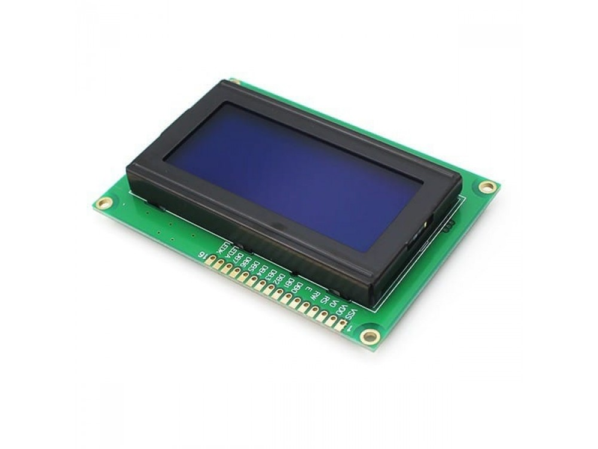
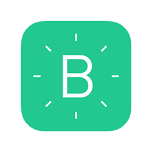
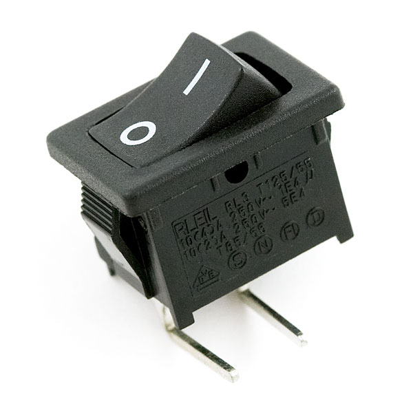
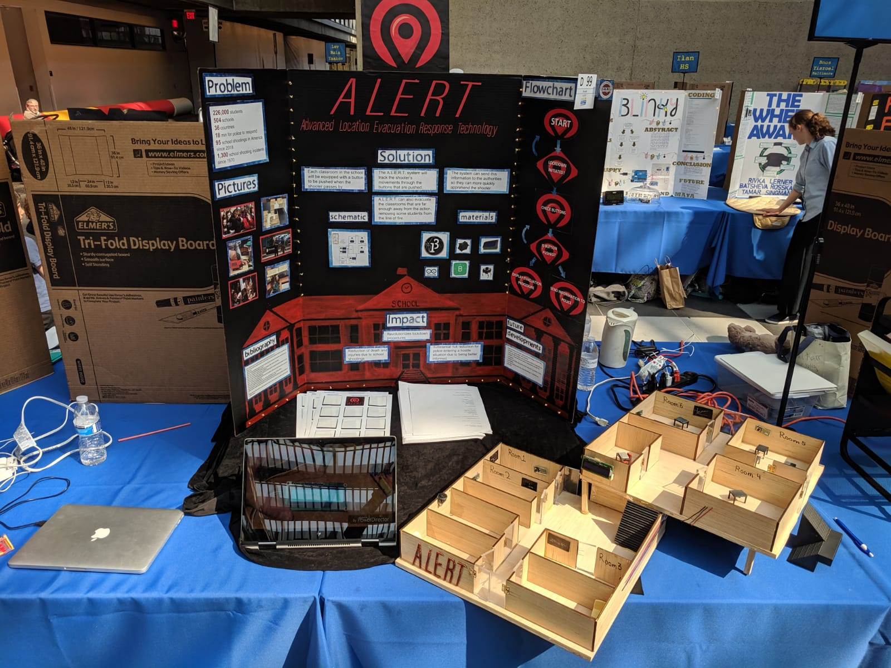
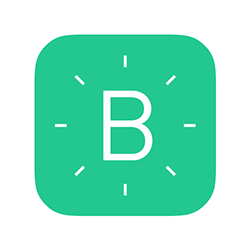
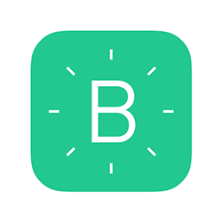
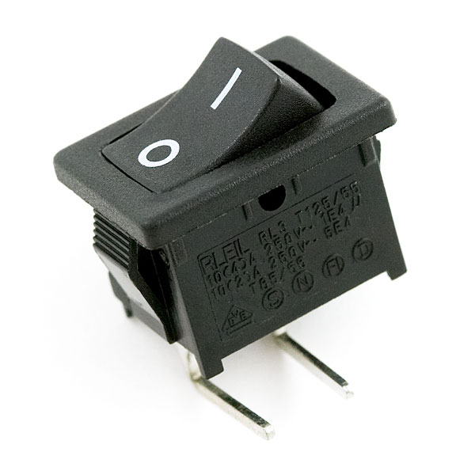
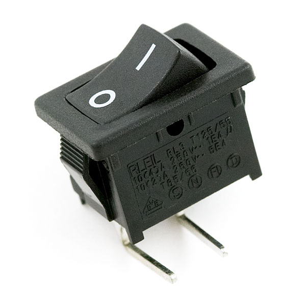

In cases of a school shooting, students and teachers are trapped helplessly in classrooms, essentially waiting to be targeted by an attacker. Police take an average of 18 minutes to arrive on the scene, plus additional time to apprehend and locate the perpetrator.
Solution:
We created A.L.E.R.T. to address this issue. Using a cheap and easily installed system of buttons, teachers are able to register the location of the shooter. Our algorithm can then track the attacker’s across the school based on the sequence of pushes. This information is used to notify the police with live updates on where the shooter is, and evacuate classrooms out of range.
Statistics:
226,000 students have been victims of school
shootings
504 schools
36 countries
18 min for police to respond
1300 school shooting incidents since 1970
Components:



Process
ALERT took about 1 and half months to make. The group spent countless hours working in and out of school.
A laser cutter was used to build the school, which was cut in the early hours of the morning by Noa, and put
together weeks later. The project was broken down into seperate parts that were tackeled by different members
of the team. Blynk was soley taken on Leah, since she was an expert on the skills of hacking and remained as
the sole owner of an apple computer which was vital for the app. Processing and any other methods were
researched and taken on by Judith. At some point she went completly insane but in the end she got porcessing to
work (ish). Noa was responsible for the main code (with the help from her dad) and for the construction of the
school. Shana Erblich helped with all the design aspects of ALERT which includes: the logo, trifold, ect.
Slideshow

This won 2nd place at the CIJE competition out of thousands of projects
About the Creators
All three of the creators are rising seniors at Bruriah High School for Girls. They all started CIJE in 10th grade and
created A.L.E.R.T in their 2nd year. Leah will hopefully go on to become something in sports, after attending some IV league. Noa
hopes to go on to become something in engineering (probably software development) after attending some school (she doesnt know which one yet). After attending Stern,
Judith also hopes to go into something with engineering. Both Noa and Judith spent their summer at the Girls Who Code Summer Immersion Program, while Leah attended a New York Times
program as well as a Columbia program.
 
  
